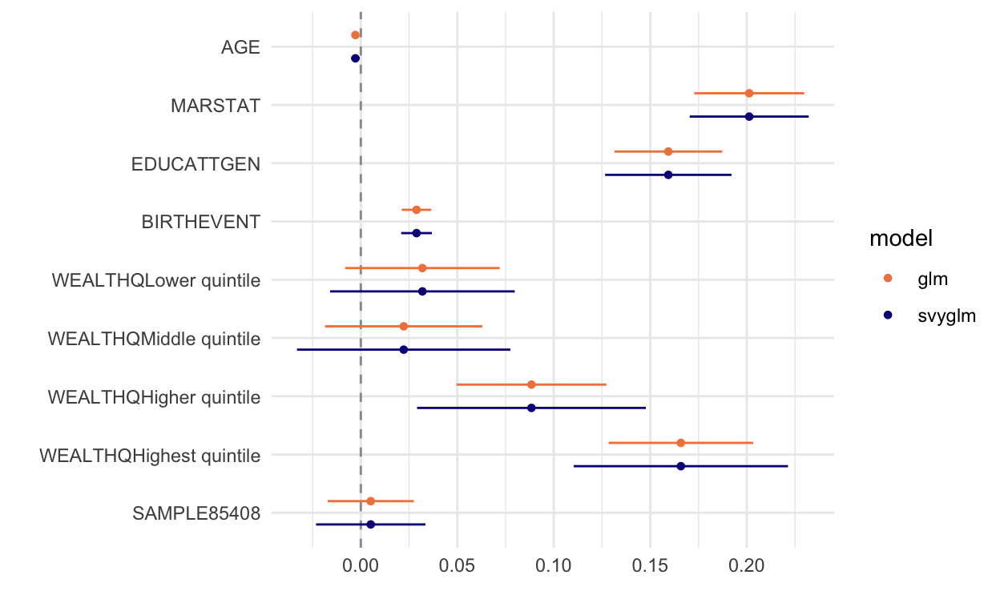
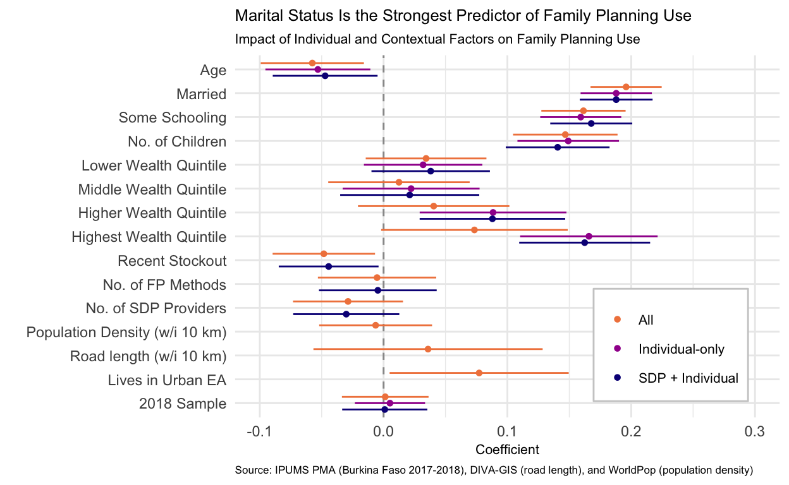

Throughout our series on Individuals in Context, we’ve been looking at PMA Service Delivery Point (SDP) data as a resource for understanding the health services environment experienced by women surveyed in PMA Household and Female samples. We created summary variables that capture the SDPs that provide services within the same enumeration areas PMA uses to construct samples of individuals. We’ve also shown how to complement SDP data with additional information about women’s lived environment collected from external geospatial data sources.
In this final post, we’ll bring everything together and demonstrate the kind of analysis you might want to do with the contextual data we’ve collected in this series. Specifically, we’ll analyze women’s current contraceptive use, FPCURRUSE, taking into account:
- individual factors about each woman collected in the Household and Female survey
- availability factors related to the supply of family planning services provided by SDPs in each woman’s enumeration area
- accessibility factors in each woman’s enumeration area - including measures of population density and transportation infrastructure - that we collected from external data sources
The availability of both detailed individual data on family planning and supply-side (service delivery) factors is one of the unique advantages of the PMA data.
Setup: Load Packages and Data
We’ll load the packages tidyverse and ipumsr, as usual. Additionally, we’ll load tidymodels, which helps apply tidyverse principles to the models we’ll be building, and a few other packages we’ll discuss below.
We’ll be using both of the Burkina Faso datasets we created in earlier posts in this series:
bf_mergedcontains a handful of variables from each sampled woman merged with summary variables about the SDPs that serve her enumeration area (created in this post).intcontains population and road density variables for each enumeration area (created in this post).
As a reminder, let’s take a glimpse at the variables we’ve currently got in each:
glimpse(bf_merged)
Rows: 6,944
Columns: 10
$ EAID <dbl+lbl> 7003, 7003, 7003, 7003, 7003, 7003,…
$ SAMPLE <int+lbl> 85405, 85405, 85405, 85405, 85405, …
$ N_SDP <int> 3, 3, 3, 3, 3, 3, 3, 3, 3, 3, 3, 3, 3, …
$ NUM_METHODS_PROV <int> 10, 10, 10, 10, 10, 10, 10, 10, 10, 10,…
$ NUM_METHODS_INSTOCK <int> 8, 8, 8, 8, 8, 8, 8, 8, 8, 8, 8, 8, 8, …
$ NUM_METHODS_OUT3MO <int> 0, 0, 0, 0, 0, 0, 0, 0, 0, 0, 0, 0, 0, …
$ MEAN_OUTDAY <dbl> NaN, NaN, NaN, NaN, NaN, NaN, NaN, NaN,…
$ PERSONID <chr> "0700300000019732017504", "070030000001…
$ URBAN <int+lbl> 0, 0, 0, 0, 0, 0, 0, 0, 0, 0, 0, 0,…
$ FPCURRUSE <int+lbl> 0, 0, 1, 1, 0, 0, 0, 0, 0, 1, 0, 0,…The variables N_SDP, NUM_METHODS_PROV, NUM_METHODS_INSTOCK, NUM_METHODS_OUT3MO, MEAN_OUTDAY, and URBAN all describe the the enumeration area (EAID) where a woman identified by PERSONID resides. The only other variable from the Household and Female questionnaire, itself, is FPCURRUSE. We’ll add more variables describing each woman in a moment.
glimpse(int)
Rows: 83
Columns: 7
$ EAID <dbl> 7003, 7006, 7009, 7016, 7026, 7042, 7048, 7056,…
$ ROAD_LENGTH <dbl> 30.29857, 28.87695, 24.08644, 41.92500, 67.6741…
$ PMACC <chr> "BF", "BF", "BF", "BF", "BF", "BF", "BF", "BF",…
$ PMAYEAR <dbl> 2017, 2017, 2017, 2017, 2017, 2017, 2017, 2017,…
$ REGION <chr> "5. centre-nord", "5. centre-nord", "8. est", "…
$ DATUM <chr> "WGS84", "WGS84", "WGS84", "WGS84", "WGS84", "W…
$ POP_DENSITY <dbl> 74.04364, 51.75554, 15.66303, 91.25882, 416.232…We’ll be using ROAD_LENGTH and POP_DENSITY, but first we’ll need to merge int to bf_merged by matching up the EAID for each woman:
bf_merged <- left_join(bf_merged, int, by = "EAID")
Let’s now introduce some new variables obtained from each woman’s responses to the Household and Female questionnaire. We’ll merge a new data extract with the following variables collected from the Burkina Faso 2017 and 2018 surveys (female respondents only):
- AGE - Age (in years)
- MARSTAT - Marital status
- EDUCATTGEN - Highest level of school attended, general (4 categories)
- WEALTHQ - Wealth score quintile
- BIRTHEVENT - Number of birth events
Following the practice we used when we made bf_merged, we’ll simply handle all of the different non-response codes in this new extract by recoding them as NA. Then, we’ll merge the extract to bf_merged by matching up each person by PERSONID:
bf_merged <- ipumsr::read_ipums_micro(
ddi = "data/pma_00018.xml",
data_file = "data/pma_00018.dat.gz") %>%
select(PERSONID, AGE, MARSTAT, EDUCATTGEN, WEALTHQ, BIRTHEVENT, STRATA) %>%
mutate(across(everything(), ~lbl_na_if(
.x,
~.lbl %in% c(
"Not interviewed (female questionnaire)",
"Not interviewed (household questionnaire)",
"Don't know",
"No response or missing",
"NIU (not in universe)"
)
))) %>%
right_join(bf_merged, by = "PERSONID")
Recoding covariates
All five of the new variables we’ve introduced are loaded into R as members of both the integer and the haven_labelled class of objects. But really, only AGE and BIRTHEVENT should be treated like continuous measures in our analysis. For MARSTAT, EDUCATTGEN, and WEALTHQ, the integer values associated with each response are arbitrary; we’re much more interested in the labels associated with these numeric values because each of these three variables reflects a categorical measurement.
bf_merged %>%
select(MARSTAT, EDUCATTGEN, WEALTHQ) %>%
map(class)
$MARSTAT
[1] "haven_labelled" "vctrs_vctr" "integer"
$EDUCATTGEN
[1] "haven_labelled" "vctrs_vctr" "integer"
$WEALTHQ
[1] "haven_labelled" "vctrs_vctr" "integer" As you might know, the normal way to handle categorical variables in a regression model is to create a binary dummy variable associated with each response, and R normally performs this task automatically when it encounters a variable that’s a member of the factor class.
If we want, we can simply coerce these variables as factors. When we do this and then use the factor in a regression model, R will select the lowest numbered response as a “reference group†and create binary dummy variables for the other responses. This makes sense with WEALTHQ, where we’d interpret the coefficient for each wealth quintile as an effect relative to being in the lowest quintile.
bf_merged %>% count(WEALTHQ)
# A tibble: 6 x 2
WEALTHQ n
* <int+lbl> <int>
1 1 [Lowest quintile] 1200
2 2 [Lower quintile] 1031
3 3 [Middle quintile] 984
4 4 [Higher quintile] 1253
5 5 [Highest quintile] 2474
6 NA 2bf_merged <- bf_merged %>%
mutate(WEALTHQ = as_factor(WEALTHQ))
bf_merged %>% count(WEALTHQ)
# A tibble: 6 x 2
WEALTHQ n
* <fct> <int>
1 Lowest quintile 1200
2 Lower quintile 1031
3 Middle quintile 984
4 Higher quintile 1253
5 Highest quintile 2474
6 <NA> 2Alternatively, we might decide to make our own binary dummy variables. This makes sense when we might want to collapse several responses into one larger category, as with MARSTAT: here, for the purpose of analyzing FPCURRUSE, we probably only care about whether the woman is partnered (the reasons why she might not be partnered are less meaningful).
bf_merged %>% count(MARSTAT)
# A tibble: 5 x 2
MARSTAT n
* <int+lbl> <int>
1 10 [Never married] 1876
2 21 [Currently married] 4307
3 22 [Currently living with partner] 410
4 31 [Divorced or separated] 163
5 32 [Widow or widower] 188bf_merged <- bf_merged %>%
mutate(MARSTAT = lbl_relabel(
MARSTAT,
lbl(1, "partnered") ~ .val %in% 21:22,
lbl(0, "unpartnered") ~ .val %in% c(10, 31, 32)
))
bf_merged %>% count(MARSTAT)
# A tibble: 2 x 2
MARSTAT n
* <dbl+lbl> <int>
1 0 [unpartnered] 2227
2 1 [partnered] 4717Another reason to consider recoding categorical variables: what if one response option dominates a huge proportion of the responses in your data? Is it worth sacrificing additional degrees of freedom to accommodate dummy variables that could otherwise be merged together? This is the case with EDUCATTGEN, where over half of the responses are “never attended.†We’ll create a single, simplified binary variable where the responses are “some schooling†or “no schooling.”
bf_merged %>% count(EDUCATTGEN)
# A tibble: 5 x 2
EDUCATTGEN n
* <int+lbl> <int>
1 1 [Never attended] 3605
2 2 [Primary/Middle school] 1212
3 3 [Secondary/post-primary] 1893
4 4 [Tertiary/post-secondary] 231
5 NA 3bf_merged <- bf_merged %>%
mutate(EDUCATTGEN = lbl_relabel(
EDUCATTGEN,
lbl(1, "some schooling") ~ .val %in% 2:4,
lbl(0, "no school") ~ .val == 1
))
bf_merged %>% count(EDUCATTGEN)
# A tibble: 3 x 2
EDUCATTGEN n
* <dbl+lbl> <int>
1 0 [no school] 3605
2 1 [some schooling] 3336
3 NA 3The last thing we’ll do here is coerce SAMPLE as a factor so that we can control for arbitrary differences caused by selection into the two samples (recall that our dataset contains two samples from Burkina Faso 2017 and 2018). Because the women in each SAMPLE were surveyed in two different years, this essentially operates like a survey-year fixed effect.
bf_merged <- bf_merged %>%
mutate(SAMPLE = as.factor(SAMPLE))
bf_merged %>% count(SAMPLE)
# A tibble: 2 x 2
SAMPLE n
* <fct> <int>
1 85405 3556
2 85408 3388Regression Models
We’re now ready to examine the relative effects individual factors on FPCURRUSE compared to the availability and accessibility of family planning services in each woman’s enumeration area. Let’s begin with a simple model containing the factors we added to the dataset above.
Individual factors: model with glm
Most R users probably use the generalized linear model function glm for this purpose. To keep our demonstration as simple as possible, we’ll fit a model using the Ordinary Least-Squares (OLS) method that glm adopts by default. We’ll use the tidymodels function broom::tidy to clean up the output for our model’s coefficient estimates.
m1 <- glm(
FPCURRUSE ~
AGE +
MARSTAT +
EDUCATTGEN +
BIRTHEVENT +
WEALTHQ +
SAMPLE,
data = bf_merged
)
tidy(m1)
# A tibble: 10 x 5
term estimate std.error statistic p.value
<chr> <dbl> <dbl> <dbl> <dbl>
1 (Intercept) 0.0421 0.0260 1.62 1.06e- 1
2 AGE -0.00280 0.000948 -2.95 3.17e- 3
3 MARSTAT 0.201 0.0145 13.9 5.21e-43
4 EDUCATTGEN 0.159 0.0143 11.2 9.42e-29
5 BIRTHEVENT 0.0289 0.00390 7.40 1.48e-13
6 WEALTHQLower quintile 0.0319 0.0204 1.56 1.18e- 1
7 WEALTHQMiddle quintile 0.0222 0.0208 1.07 2.85e- 1
8 WEALTHQHigher quintile 0.0884 0.0198 4.46 8.25e- 6
9 WEALTHQHighest quintile 0.166 0.0191 8.67 5.24e-18
10 SAMPLE85408 0.00515 0.0114 0.453 6.51e- 1Because the outcome (FPCURRUSE) is binary, this linear regression is a linear probability model and the coefficients on each term should be interpreted as a percentage point change in the probability of current family planning use.
For each of the binary dummy variables we created, the coefficient estimate shows how much the probability FPCURRUSE == "yes" increases if the value of the dummy variable is 1. For example, in MARSTAT the value 1 represents “partnered†women, while the value 0 represented “unpartnered†women. The coefficient on MARSTAT is 0.201, meaning our model predicts that being partnered is associated with an increase in the expected probability of family planning use by 0.201.
Is this a meaningful difference? Consider that the mean of FPCURRUSE is 0.34: this is the probability you might use to guess a woman’s likelihood for using family planning if we didn’t have access to any other variables. Relative to that, an increase of 0.201 is pretty substantive.
What about the other coefficients? We also see a large increase in the probability of family planning use for women who have “some schooling,†and a smaller increase for those who have more children.
Notice what happened with WEALTHQ, the variable we coerced as a factor above. As expected, R created a binary dummy variable from each response option except the reference group, which is the “lowest quintile.†It’s important to remember that each of these dummy variables represents the effect a being in a particular quintile relative to the “lowest quintile.†These results show that family planning use increases with wealth, which is expected (although the effects don’t become large or statistically significant until we get to the “high†and “highest†income quintiles).
Individual factors: model with svyglm
There is one problem with the model we created above: as we’ve discussed, PMA samples households randomly within the same enumeration area, and it’s likely that households located together will share many common features. This violates one of the basic assumptions of OLS regression, where we expect modeling errors to be uncorrelated (Cameron and Miller 2015). To address this, we’ll need to use a model that allows us to specify the complexities of PMA survey design. A common approach uses the survey package developed by Thomas Lumley.1
Lumley’s modeling function survey::svyglm is similar to glm, except that it takes a special design argument where glm takes a data argument. We use the function survey::svydesign to specify the data, the cluster ids from EAID, and the sampling strata STRATA (if we were using the sample weights from FQWEIGHT, we could do that here, too):
m2 <- svyglm(
FPCURRUSE ~
AGE +
MARSTAT +
EDUCATTGEN +
BIRTHEVENT +
WEALTHQ +
SAMPLE,
design = svydesign(
ids = ~EAID,
strata = ~STRATA,
data = bf_merged
)
)
tidy(m2)
# A tibble: 10 x 5
term estimate std.error statistic p.value
<chr> <dbl> <dbl> <dbl> <dbl>
1 (Intercept) 0.0421 0.0366 1.15 2.54e- 1
2 AGE -0.00280 0.00114 -2.45 1.65e- 2
3 MARSTAT 0.201 0.0157 12.8 3.19e-20
4 EDUCATTGEN 0.159 0.0167 9.53 2.13e-14
5 BIRTHEVENT 0.0289 0.00405 7.13 6.41e-10
6 WEALTHQLower quintile 0.0319 0.0244 1.31 1.95e- 1
7 WEALTHQMiddle quintile 0.0222 0.0282 0.788 4.33e- 1
8 WEALTHQHigher quintile 0.0884 0.0302 2.92 4.62e- 3
9 WEALTHQHighest quintile 0.166 0.0283 5.86 1.30e- 7
10 SAMPLE85408 0.00515 0.0145 0.356 7.23e- 1To see how this impacts our model estimates, let’s visualize the confidence interval for each coefficient with dotwhisker::dwplot. We’ll use the same function a few times here, and we’ll want to repeat the same visual elements each time, so we’ll just wrap everything together in a custom function we’re calling pma_dwplot():
pma_dwplot <- function(...){
dwplot(
bind_rows(...),
dodge_size = 0.8,
vline = geom_vline(xintercept = 0, colour = "grey60", linetype = 2)) +
scale_color_viridis_d(option = "plasma", end = .7) +
theme_minimal()
}
pma_dwplot(
tidy(m1) %>% mutate(model = "glm"),
tidy(m2) %>% mutate(model = "svyglm")
)

We can see from this plot that the confidence intervals obtained from svyglm are wider than those we got from glm, but the point estimates for each coefficient are unchanged. We also added a dashed line at 0 to make it really easy to see when coefficients are statistically insignificant at the 5% level (if so, the “whiskers†of a 95% confidence interval will cross 0).
Availabillity: modeling with SDP variables
While these individual factors are important, we should also expect the availability and accessibility of family planning services to partially determine their use (Bongaarts 2011). Back in an earlier post, we observed that the women in our sample appeared to be 5% more likely to use family planning if they lived in an enumeration area where no SDPs reported a recent contraceptive stockout, compared to women living in areas where at least one SDP did experience a recent stockout. Now we’ll see if that difference is statistically significant, controlling for other factors.
First, we’ll create a binary variable STOCKOUT indicating whether each woman lives in an enumeration area where at least one SDP reported a recent stockout:
bf_merged <- bf_merged %>%
mutate(STOCKOUT = case_when(
NUM_METHODS_OUT3MO > 0 ~ 1,
NUM_METHODS_OUT3MO == 0 ~ 0
))
bf_merged %>% count(STOCKOUT)
# A tibble: 3 x 2
STOCKOUT n
* <dbl> <int>
1 0 4561
2 1 1725
3 NA 658Next, we’ll add STOCKOUT to our previous model, along with NUM_METHODS_PROV (the number of methods available from at least one SDP serving the woman’s enumeration area) and N_SDP (the number of sampled SDPs serving the woman’s enumeration area).
m3 <- svyglm(
FPCURRUSE ~
AGE +
MARSTAT +
EDUCATTGEN +
BIRTHEVENT +
WEALTHQ +
SAMPLE +
STOCKOUT +
NUM_METHODS_PROV +
N_SDP,
design = svydesign(
ids = ~EAID,
strata = ~STRATA,
data = bf_merged
)
)
tidy(m3)
# A tibble: 13 x 5
term estimate std.error statistic p.value
<chr> <dbl> <dbl> <dbl> <dbl>
1 (Intercept) 0.113 0.105 1.08 2.85e- 1
2 AGE -0.00249 0.00114 -2.19 3.23e- 2
3 MARSTAT 0.201 0.0161 12.5 1.94e-19
4 EDUCATTGEN 0.168 0.0169 9.93 6.35e-15
5 BIRTHEVENT 0.0272 0.00414 6.57 7.77e- 9
6 WEALTHQLower quintile 0.0380 0.0244 1.56 1.24e- 1
7 WEALTHQMiddle quintile 0.0211 0.0287 0.736 4.64e- 1
8 WEALTHQHigher quintile 0.0879 0.0300 2.93 4.58e- 3
9 WEALTHQHighest quintile 0.162 0.0270 6.02 7.55e- 8
10 SAMPLE85408 0.000951 0.0175 0.0542 9.57e- 1
11 STOCKOUT -0.0444 0.0206 -2.16 3.44e- 2
12 NUM_METHODS_PROV -0.00199 0.0104 -0.192 8.48e- 1
13 N_SDP -0.0165 0.0120 -1.38 1.72e- 1Indeed, women living in an enumeration area where we’re aware of recent stockouts are less likely to be currently using family planning! The effect isn’t quite as large as some of the individual level factors we’ve examined, but it is statistically significant (p < 0.05).
Does the introduction of SDP variables change our estimates for the individual factors we examined previously? A new dwplot seems to show little difference:
pma_dwplot(
tidy(m2) %>% mutate(model = "Individual-only"),
tidy(m3) %>% mutate(model = "SDP + Individual")
)

Accessibility: modeling with external spatial variables
Availability of family planning methods (or lack thereof) is not the same as accessibility. The variables we created in our last post using external geospatial data allow us to explore some factors related to accessibility, which is what we’ll add now. We’ll complement these external variables with URBAN, indicating whether the woman lives in an urban area.
m4 <- svyglm(
FPCURRUSE ~
AGE +
MARSTAT +
EDUCATTGEN +
BIRTHEVENT +
WEALTHQ +
SAMPLE +
STOCKOUT +
NUM_METHODS_PROV +
N_SDP +
POP_DENSITY +
ROAD_LENGTH +
URBAN,
design = svydesign(
ids = ~EAID,
strata = ~STRATA,
data = bf_merged
)
)
tidy(m4)
# A tibble: 16 x 5
term estimate std.error statistic p.value
<chr> <dbl> <dbl> <dbl> <dbl>
1 (Intercept) 0.0833 0.117 0.712 4.79e- 1
2 AGE -0.00303 0.00112 -2.71 8.61e- 3
3 MARSTAT 0.210 0.0157 13.4 1.97e-20
4 EDUCATTGEN 0.162 0.0174 9.30 1.28e-13
5 BIRTHEVENT 0.0284 0.00417 6.82 3.41e- 9
6 WEALTHQLower quintile 0.0343 0.0249 1.38 1.72e- 1
7 WEALTHQMiddle quintile 0.0124 0.0291 0.426 6.72e- 1
8 WEALTHQHigher quintile 0.0405 0.0312 1.30 1.99e- 1
9 WEALTHQHighest quintile 0.0734 0.0384 1.91 6.07e- 2
10 SAMPLE85408 0.00133 0.0179 0.0744 9.41e- 1
11 STOCKOUT -0.0483 0.0211 -2.29 2.53e- 2
12 NUM_METHODS_PROV -0.00225 0.0104 -0.216 8.30e- 1
13 N_SDP -0.0158 0.0124 -1.27 2.09e- 1
14 POP_DENSITY -0.00000144 0.00000522 -0.276 7.83e- 1
15 ROAD_LENGTH 0.00110 0.00144 0.760 4.50e- 1
16 URBAN 0.0773 0.0370 2.09 4.03e- 2pma_dwplot(
tidy(m2) %>% mutate(model = "Individual-only"),
tidy(m3) %>% mutate(model = "SDP + Individual"),
tidy(m4) %>% mutate(model = "All")
)
This figure with all three models reveals that marital status, education, number of births, and living in an enumeration area that faced recent stockouts are all significantly associated with current family planning use. However, it’s pretty difficult to compare the effects across all the variables. The coefficients on age, population density, and road length are particularly hard to examine and compare. dotwhisker includes a very handy function that re-scales continuous variables on the right-hand side of your regression model to make them more comparable to binary predictors. Specifically, dotwhisker::by_2sd() re-scales continuous input variables by 2 standard deviations following Gelman (2008).2
While we’re adding some last touches to make the plot more readable, we’ll also provide a title, clearer variable names on the Y axis, a tighter scale on the X axis, and a caption at the bottom.
list(
tidy(m2) %>% mutate(model = "Individual-only"),
tidy(m3) %>% mutate(model = "SDP + Individual"),
tidy(m4) %>% mutate(model = "All")
) %>%
map(~by_2sd(.x, bf_merged)) %>%
bind_rows() %>%
relabel_predictors(
c(
AGE = "Age",
MARSTAT = "Married",
EDUCATTGEN = "Some Schooling",
BIRTHEVENT = "No. of Children",
`WEALTHQLower quintile` = "Lower Wealth Quintile",
`WEALTHQMiddle quintile` = "Middle Wealth Quintile",
`WEALTHQHigher quintile` = "Higher Wealth Quintile",
`WEALTHQHighest quintile` = "Highest Wealth Quintile",
STOCKOUT = "Recent Stockout",
NUM_METHODS_PROV = "No. of FP Methods",
N_SDP = "No. of SDP Providers",
POP_DENSITY = "Population Density (w/i 10 km)",
ROAD_LENGTH = "Road length (w/i 10 km)",
URBAN = "Lives in Urban EA",
SAMPLE85408 = "2018 Sample"
)
) %>%
dwplot(
dodge_size = 0.8,
vline = geom_vline(xintercept = 0, colour = "grey60", linetype = 2)
) +
scale_color_viridis_d(option = "plasma", end = .7) +
theme_minimal() +
labs(
x = "Coefficient",
color = NULL,
title = "Marital Status Is the Strongest Predictor of Family Planning Use",
subtitle = "Impact of Individual and Contextual Factors on Family Planning Use",
caption = "Source: IPUMS PMA (Burkina Faso 2017-2018), DIVA-GIS (road length), and WorldPop (population density)"
) +
scale_x_continuous(limits = c(-0.1, 0.3)) + # to make space for the legend
theme(
legend.position = c(0.8, 0.2),
title = element_text(size = 8),
legend.text = element_text(size = 8),
plot.caption = element_text(hjust = 0), #left align the caption
legend.background = element_rect(colour = "grey80")
)

Now that we’ve re-scaled the continuous input variables by two standard deviations, we can much more easily see the relationship between age and family planning use. Across all models a one-year increase in a woman’s age is associated with a five percentage point lower expected probability of using family planning. This effect is statistically significant at the 5% level in all three models as well.
The relationships we observed with marital status, education, and number of children are quite stable across all the models – even as we added variables representing the service environment and broader context of contraceptive availability the coefficients did not meaningfully change.
This is in pretty striking contrast to what happens to the wealth quintile variables. When we included only woman and SDP characteristics, being in either the higher and highest wealth quintiles was associated with large and statistically significant increases in the probability of using family planning. But as we added geospatial variables and the URBAN variable in particular, the coefficients become smaller and the confidence intervals become wider. This indicates that there was likely omitted variable bias because wealth is correlated with living in an urban area but when we excluded URBAN the wealth quintile variables were capturing some of this relationship with family planning use.
Even though this analysis was relatively simple, it was quite informative about different drivers of family planning use. You could easily extend this analysis to include other factors that influence family planning use, incorporate fixed or random effects, or take advantage of the multiple years of survey data!
As always, let us know if you have any questions on this post or if you’re working any fertility related analyses and you have a question that we can help address with the blog!
We highly recommend Lumley’s (2011) book, Complex Surveys: A Guide to Analysis Using R.↩︎
We recommend checking out the full paper, but the short explanation is that with binary predictors you are comparing a value of
0to a value of1when interpreting coefficients. A 1-unit change in a binary predictor is equivalent to a 2 standard deviation change because the standard deviation of a binary variable with equal probabilities is 0.5.↩︎